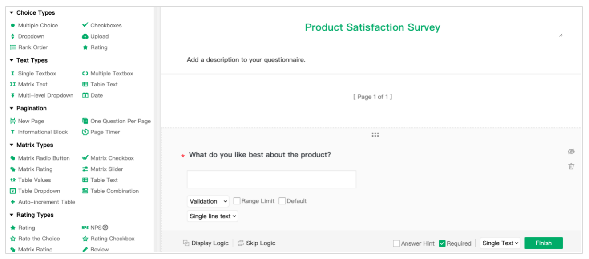
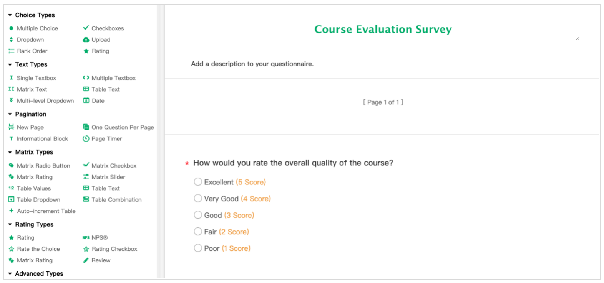

Back to Blog Home
Back to Blog Home
Open-Ended vs Closed-Ended Questions: Choosing the Right Type for Your Survey
When designing a survey, one of the key decisions to make is whether to use open-ended or closed-ended questions. Open-ended questions allow respondents to provide free-form answers in their own words. Closed-ended questions, on the other hand, provide a set of predefined responses for respondents to choose from. In this article, we'll explore the differences between these questions, and provide examples of when to use each type of question.
Open-Ended Questions
Open-ended questions provide respondents with a space to write their own answers, rather than selecting from a predetermined list of responses. These questions allow respondents to elaborate on their thoughts and feelings about a topic, and can provide valuable insights into attitudes and opinions.
One of the key benefits of open-ended questions is that they allow researchers to gather more in-depth and nuanced responses from respondents. For example, if you were conducting a survey about customer satisfaction with a new product, you might ask an open-ended question like, "What do you like best about the product?" This question gives respondents the opportunity to share specific details about why they enjoyed using the product, providing valuable feedback for product improvement.

However, there are also some downsides to using open-ended questions. Because respondents must write their own answers, open-ended questions tend to take longer to complete. This may lead to lower response rates. Additionally, analyzing open-ended responses can be time-consuming and complex, requiring researchers to code and categorize answers to identify common themes.
Here are some examples of open-ended questions:
● What areas of our customer service could be improved in your opinion?
● What features or improvements would you like to see in our product offerings?
● What makes our marketing stand out compared to other companies?
● What values do you think are most important to our company?
● What areas do you feel you need more support or training in to improve your performance?
Closed-Ended Questions
Closed-ended questions, on the other hand, provide respondents with a set of predefined responses to choose from. These questions are typically used for gathering quantitative data. They allow researchers to collect data that can be easily analyzed and compared across respondents.
One of the benefits of closed-ended questions is that they allow researchers to easily compare responses across a large sample size. For example, if you were conducting a survey about course evaluation, you might ask a closed-ended question like, "How would you rate the overall quality of the course?" This question would provide a clear set of options (such as "Excellent," "Very Good," "Good," "Fair,"or "Poor"), allowing for easy analysis of the results.

However, closed-ended questions can also have limitations. Because respondents are limited to a set of predefined responses, closed-ended questions may not allow for the same level of nuance and detail as open-ended questions. Additionally, closed-ended questions may not capture all of the potential responses a respondent might provide, leading to incomplete data.
Here are some examples of closed-ended questions:
● How often do you exercise each week?
- Everyday
- 2-3 times per week
- Once a week
- Once a month
● How likely are you to purchase our product or service?
- Extremely likely
- Likely
- Neutral
- Unlikely
- Extremely unlikely
● How long have you been with the company?
- Less than 1 year
- 1-2 years
- 3-5 years
- 6-10 years
- More than 10 years
When to Use Each Type
When deciding whether to use open-ended or closed-ended questions in a survey, it's important to consider the research question and the goals of the survey. Open-ended questions are generally best suited for qualitative research, where in-depth insights and detailed feedback are important. Closed-ended questions are better suited for quantitative research, where standardized data is needed for comparison and analysis.
In general, mixing open-ended and closed-ended questions tend to be the most effective, as they provide a balance of qualitative and quantitative data. For example, a customer satisfaction survey might include both open-ended questions about what customers liked or disliked about a product, as well as closed-ended questions about overall satisfaction or likelihood to recommend the product.
Conclusion
In summary, open-ended questions and closed-ended questions each have their own strengths and limitations. A well-designed survey will likely include a mix of both types of questions, providing a more complete picture of the attitudes and opinions of the respondents.